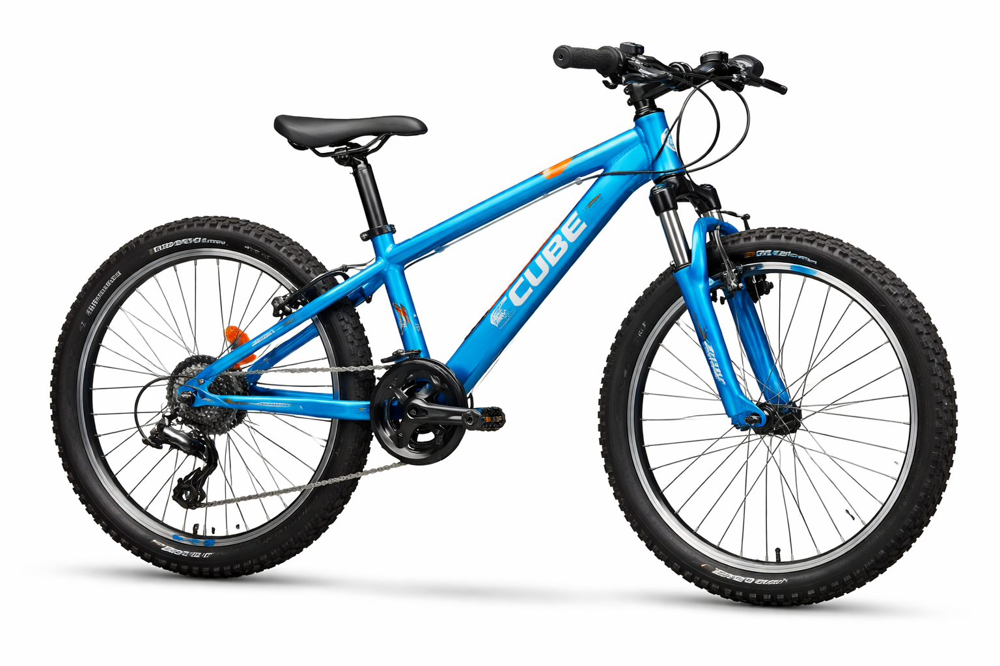

Junior Bike
Cube Bikes Kid 240
£360.00
Halfway between a kid's bike and a mountain bike for adults, the Kid 240 is the ideal choice for growing riders who want to keep up with friends and parents on off-road rides.
- Lightweight aluminium frame
- 24 inch wheels (130–160 cm rider height)
- Suntour front suspension
- 7-speed triple transmission
- Weight: 12.25 kg